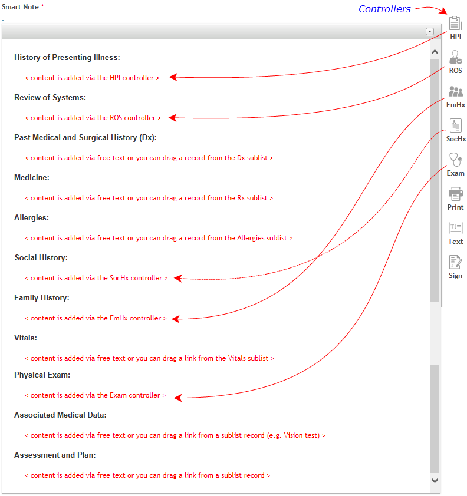
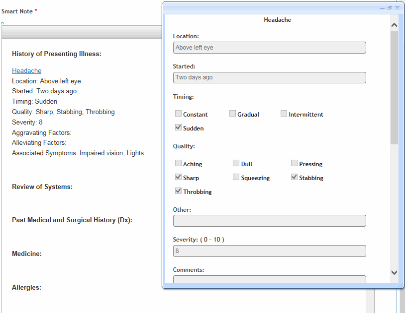
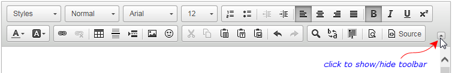

The Smart Note field is included on the default Clinic Visit, Clinic Visit Short Form and Clinic Visit Notes layouts. It would have to be added to any custom clinic visit layouts (see Creating a Custom Layout).
While you can still type in note content manually, the Smart Note field provides guidance to create detailed notes through the use of note templates and questionnaires. Cority provides a SOAP note template and an Admission note template, both of which include a series of standard section headings (e.g. History of Presenting Illness, Physical Exam, etc.). Questionnaires prompt you for responses that are added to the related section.
The form layout determines which Smart Note template is used by default.
To choose a different template for a particular Smart Note, see Using a Different Smart Note Template below.
To change the default template, see Defining the Default Smart Note Template.
You can create your own Smart Note templates and content questionnaires; for more information, see Customizing Smart Notes.
The field provides a number of controllers (on the right-hand side), through which you can:
Select a content questionnaire and respond to questions; responses are automatically added to the appropriate section of the note.
Print the Assessment & Plan section of the note (or other sections if the template has been customized) to provide to the patient as a visit summary.
Insert any “canned” note text that was previously created to be inserted into any note.
Sign the note, which will lock the record and add it to the Notes sublist.
In addition to using questionnaires for content, you can quickly add a specific medication, allergy, diagnosis (along with its code and any accompanying notes) or vital signs record to any location in a Smart Note by simply dragging and dropping the name of the record from the Rx (Medications), Dx, Allergies or Vital Signs sublist into the note. The corresponding information will be added to the note at the location of the cursor.
If you drag a record from any other sublist, a date link is inserted that provides a shortcut to the record.
The following example shows the default Admission note template sections and where the content for each section could come from:

The SOAP note template is configured so that the HPI controller populates the Subjective section and the Exam controller populates the Objective section. The other controllers populate the note according to the cursor location. Other custom templates may be configured with tags to work with the controllers to determine placement.
The form’s layout determines which Smart Note template is used by default. To change the default template, see Defining the Default Smart Note Template.
To choose a different template for a particular Smart Note (without changing the default):
In the Smart Note field, press Ctrl+A to select all headings, then press Delete.
Click the Text controller, and choose the note template you want to use (e.g. SOAP or a custom template).
The following uses the Admission note template as an example.
In the clinic visit record, locate the Smart Note field.
Click in a section and then click a controller, e.g. HPI.
You will see a list of all associated questionnaires. Select one or more. If only one exists, it will be loaded automatically.
The questions for the first selected questionnaire open in a separate window. Answer the questions and click Save. If you selected more than one questionnaire, the next questionnaire opens. When all the questionnaires have been completed, all responses are listed in the Smart Note at the cursor location. A link to the questionnaire allows you to view the questionnaire layout (but not change the responses).

Repeat steps 2-4 as required.
To include the text of a recorded allergy, diagnosis, medication, or vital signs record, click in the the appropriate section, optionally type any preface text (e.g. “P/t was prescribed with:”) then drag the appropriate record from the sublist to the highlighted orange area above the Smart Note field.
To include a link to any other type of sublist record, place the cursor in the desired location, then drag the sublist record to that location. Because this only inserts a date link, you should type some preface text (e.g. “last Vision Test completed on:”).
To include the contents of an AddNote template, place the cursor in the desired location of the smart note and press Alt-W to use smart search, or click the Text controller to choose the template.
Once placed into the note, all text is editable. Optionally, use the tools at the top of the note to format your content.

Save the clinic visit record.
To print the Assessment & Plan section to give to your patient, click the Print controller.
If you want to configure different content to be printed:
Expand the Smart Note toolbar and click Source.
Locate the following line, which will be near the bottom above the Assessment & Plan section:
<div id="Print_space" style="display: none;"> </div>
Cut this line and paste it above the section that you want to print. Note that everything below this line will be printed. If you want to limit what prints, move the desired content to the end of the note first, then place the <div> line above it.
The note content remains visible in the Smart Note field until the note is signed (via the Sign controller), at which time the note is added to the Notes sublist (see Notes Tab) and the field is cleared.